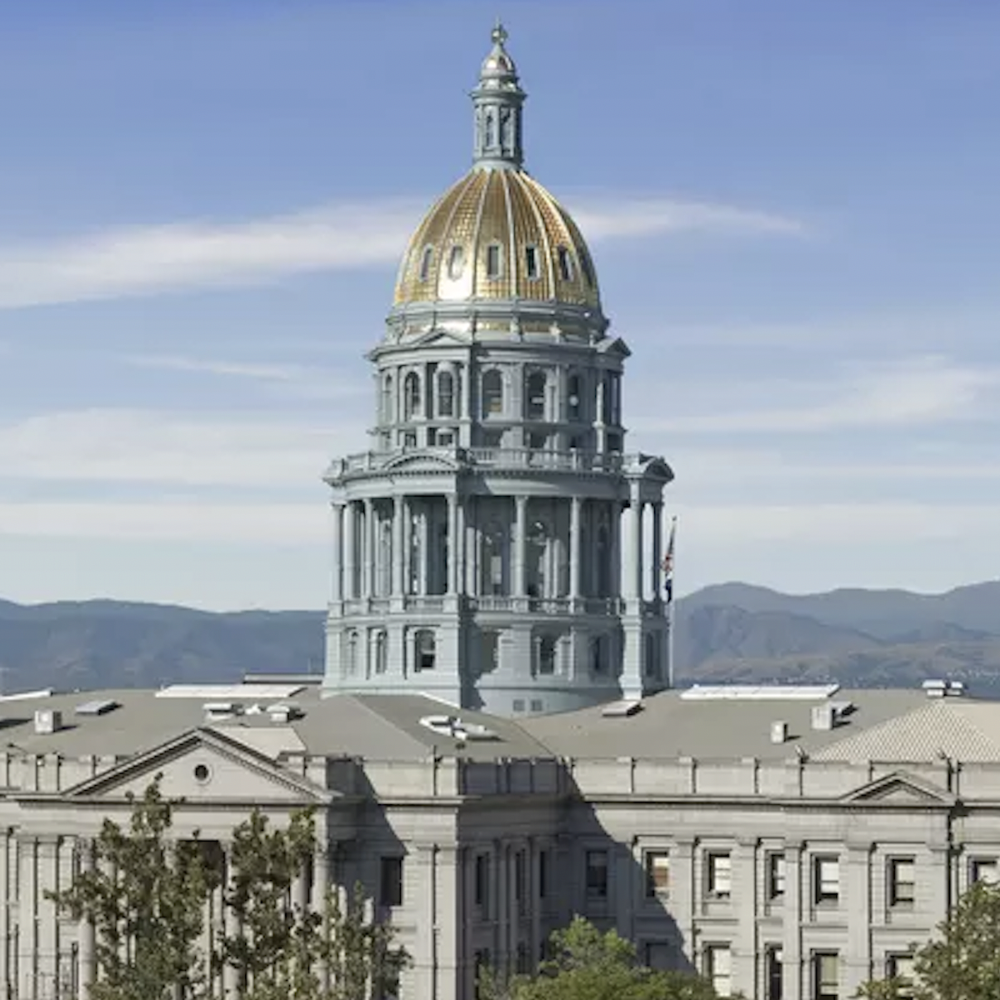
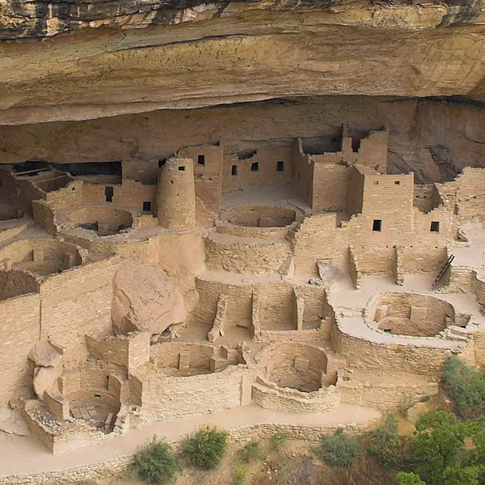

There are countless reasons why someone should get off their ass and go explore Colorado. From the stunning natural beauty of the Rocky Mountains to the vibrant culture and unique cuisine of Denver, there's something for everyone in the Centennial State. Whether you're an outdoor enthusiast, a foodie, or simply looking for a change of scenery, Colorado is the perfect place for an unforgettable adventure.
Denver Union Station is a historic transportation hub turned vibrant gathering place featuring restaurants, shops, and a luxury hotel.
Telluride Mountain Village Gandola
The Telluride Mountain Village Gondola is a free, scenic, and eco-friendly transportation system that provides breathtaking views of the San Juan Mountains. Click here for more information
Museum of Nature and Science
The Denver Museum of Nature & Science is a world-class museum that offers engaging exhibits and educational programs on various scientific topics, including space, health, and anthropology. Click here for more information
Bachelor Syracuse Mine Tour
The Bachelor Syracuse Mine Tour is an underground adventure in Ouray that offers visitors a glimpse into the area's mining history and the opportunity to experience what it was like to be a miner. Click here for more information
Butterfly Pavilion
The Butterfly Pavilion in Colorado is a unique indoor zoo that allows visitors to interact with and learn about various live invertebrates, including butterflies and spiders. Click here for more information
Denver Art Museum
The Denver Art Museum is a world-class museum featuring diverse art from various cultures and periods. Click here for more information
Colorado State Capitol

The Colorado State Capitol is a stunning neoclassical building in Denver that houses the Colorado General Assembly and the offices of the Governor and Lieutenant Governor. Click here for more information
Colorado School of Mines Geology Museum
The Colorado School of Mines Geology Museum is a fascinating destination that showcases a diverse collection of minerals, fossils, and other geological wonders, including a T-Rex skeleton. Click here for more information
Park Meadows Mall
Park Meadows Mall is a premier shopping destination in Colorado, featuring over 185 stores, restaurants, and entertainment options, including high-end retailers like Nordstrom and Tiffany & Co. Click here for more information
Outdoor Summer Activities
Fossils at Dinosaur National Monument
Dinosaur National Monument is a paleontologist's dream, containing one of the world's most complete and diverse collections of dinosaur fossils, including the famous Stegosaurus and Allosaurus. Click here for more information
Ancestral Puebloan Ruins at Hoveweep (near Dove Creek)
The Ancestral Puebloan ruins at Hovenweep near Dove Creek are a fascinating archaeological site showcasing the ancient Pueblo people's impressive masonry skills and cultural traditions. Click here for more information
Cave Dwellings at Mesa Vesdes National Park

The cave dwellings at Mesa Verde National Park are a remarkable feat of ancient engineering and provide a unique window into the lives of the Ancestral Puebloan people who inhabited the area over 700 years ago. Click here for more information
Rocky Mountain National Park
Rocky Mountain National Park is a breathtaking wilderness area that boasts snow-capped peaks, pristine alpine lakes, and abundant wildlife, offering visitors endless outdoor adventure and exploration opportunities. Click here for more information
Great Sand Dunes
The Great Sand Dunes is a surreal and otherworldly natural wonder that features the tallest sand dunes in North America, providing visitors with an unforgettable desert-like experience amidst the Rocky Mountains. Click here for more information
Royal Arch Trail
The Royal Arch Trail is a challenging yet rewarding hike that offers stunning panoramic views of Boulder and the surrounding mountains, culminating in a breathtaking natural sandstone arch. Click here for more information
Lake Isabelle Trail
The Lake Isabelle Trail is a picturesque hike that leads visitors through a stunning alpine valley and past waterfalls before reaching the serene Lake Isabelle, surrounded by towering peaks and vibrant wildflowers. Click here for more information
Devil's Head Lookout Trail
The Devil's Head Lookout trail is a scenic and moderately challenging hike that rewards visitors with breathtaking panoramic views of the Rocky Mountains and the opportunity to climb to the top of a historic fire lookout tower. Click here for more information
Eldorado Canyon Trail
The Eldorado Canyon trail= is a stunning hike that takes visitors through a rugged canyon featuring towering sandstone cliffs, a picturesque creek, and the historic ruins of an old hotel and mining town. Click here for more information
Outdoor Winter Activities
Ski at one of Colorado’s 28 Ski Resorts
Vail, CO, offers world-class skiing and snowboarding experiences, with over 5,000 acres of skiable terrain, stunning mountain vistas, and a charming alpine village atmosphere. Click here for more information
Aspen, CO, is a premier ski resort destination that offers some of the best skiing and snowboarding in the world, with four mountains to choose from, top-notch amenities, and a vibrant cultural scene. Clickhere for more information
Keystone, CO, is a family-friendly ski resort with over 3,000 acres of skiable terrain, diverse runs for all skill levels, and many activities on and off the slopes. Click here for more information
Ice Skating
The Old Town Square rink is a charming outdoor ice skating rink that offers a festive and family-friendly atmosphere, surrounded by quaint shops and restaurants in the heart of Fort Collins. Click here for more information
The Downtown Denver Rink is a fun and lively outdoor ice skating rink in the city's heart, with stunning skyline views and plenty of nearby attractions. Clickhere for more information
The Evergreen Rink is a picturesque outdoor ice skating rink nestled in the mountains, surrounded by towering pine trees and offering a rustic and charming winter experience. Click here for more information
Tubing
Tubing in Vail, CO, is a thrilling winter activity that allows visitors to slide down the mountain on inflatable tubes, with multiple lanes, stunning views, and a fun and family-friendly atmosphere. Click here for more information
Tubing in Steamboat, CO, is a popular winter activity that allows visitors to slide down the mountain on inflatable tubes with multiple lanes, exciting features, and a convenient lift to take riders back up the hill. Clickhere for more information
Tubing in Copper, CO, is a fun and thrilling winter activity that allows visitors to slide down the mountain on inflatable tubes with multiple lanes, a steep drop, and a conveyor belt to transport riders back up the hill.Click here for more information
Hot Springs
The hot springs in Ouray, CO, are a natural wonder that offers visitors the chance to soak in relaxing and therapeutic mineral-rich hot pools surrounded by stunning mountain scenery. Click here for more information
The hot springs in Iron Mountain, CO, are a unique and luxurious experience that allows visitors to soak in various indoor and outdoor mineral-rich hot pools with stunning views of the Colorado River and the surrounding canyon. Clickhere for more information
The hot springs in Glenwood Springs, CO, are a popular and historic attraction that offers visitors the chance to soak in natural mineral-rich hot pools, with multiple pools of different temperatures, a spacious deck area, and stunning views of the mountains. Click here for more information
Food
Buckhorn Exchange
Buckhorn Exchange is a historic and unique restaurant that offers visitors the chance to dine on exotic meats like elk, bison, and rattlesnake in a Wild West atmosphere, with taxidermy animals and antiques decorating the walls. Click here for more information
Bingo Burger
Bingo Burger is a favorite local restaurant offering visitors delicious burgers made with fresh, locally sourced ingredients, creative toppings, and tasty hand-cut fries and milkshakes. Click here for more information
The Fort
The Fort restaurant is a unique and historic dining experience that offers visitors the chance to dine on traditional foods of the American West, like buffalo, elk, and quail, in a replica of an 1800s adobe fur-trading fort, with stunning views of the mountains. Click here for more information
Stanley Marketplace
Stanley Marketplace is a trendy and bustling food hall that offers visitors various culinary options from multiple local vendors, including tacos, sushi, pizza, ice cream, coffee, and more. Click here for more information
Denver Biscuit Company
Denver Biscuit Company is a popular breakfast and brunch spot specializing in serving up giant, flaky biscuits smothered in savory toppings like fried chicken, bacon, and gravy, along with tasty sides like hash browns and grits. Click here for more information
Denver Central Market
Denver Central Market is a trendy indoor food hall that showcases a variety of local vendors, offering visitors everything from fresh seafood and meats to artisanal bread, cheeses, and chocolates. Click here for more information
Brasserie Ten Ten
Brasserie Ten Ten is a French-inspired restaurant in downtown Boulder, offering classic dishes and an extensive wine list. Click here for more information